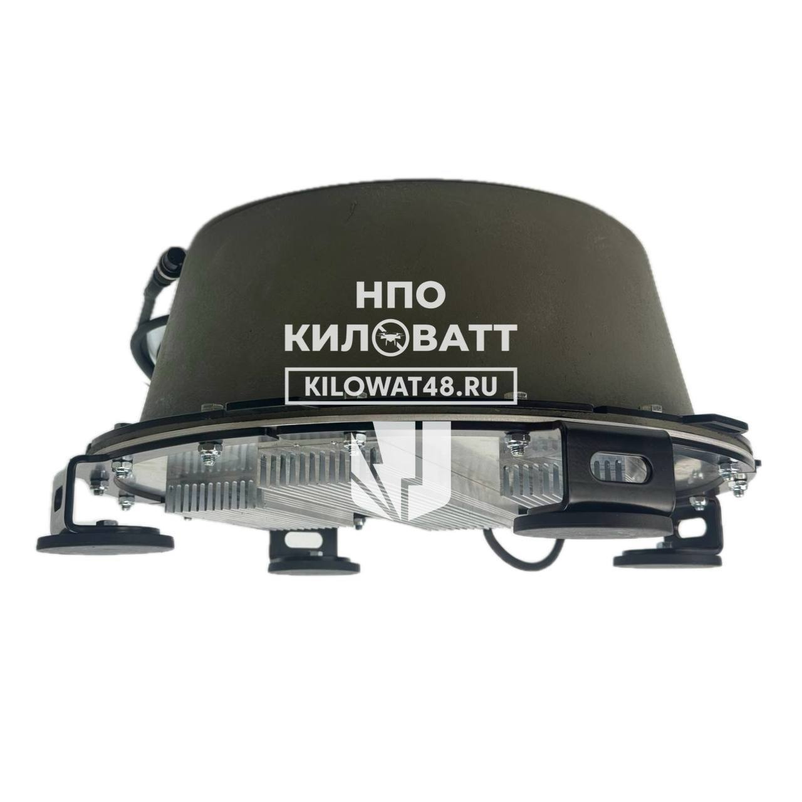

Company profile · РОЙ.МАРКЕТ investigation
At a glance
Ownership & corporate history
| Value | As of | Note |
|---|---|---|
| Шестопалов Сергей Анатольевич | 2024-07-22 | per egrul.nalog.ru open-API lookup AND this entity's own official-dealer certificate (№2106/2024, signed personally by "Генеральный директор Шестопалов С.А."). CONTRADICTS investigator.org.ua's (investigations/270974) characterization of Шестопалов as a mere nominee/fake owner of an unspecified Kilovatt entity -- here he is confirmed as the entity's own active, signing director, not a passive figurehead, at least on this entity's customer-facing paperwork. |
| Value | As of | Note |
|---|---|---|
| Шестопалов Сергей Анатольевич | 2026-05-13 | personal ИНН 480601511636; sole founder -- appointment record dated 13.05.2026 in this extract (may reflect a re-entry/confirmation of an existing founding stake rather than a change, original registration is 22.07.2024) |
| Value | As of | Note |
|---|---|---|
| 1000000 | 2026-05-13 | Full signed ЕГРЮЛ выписка pulled 2026-09-07 (egrul_vypiska_pull.py). |
| Value | As of | Note |
|---|---|---|
| soviet_legacy_defense_industrial | 2026-08-23 | Site at ул. Папина, д. 2, Липецк (52°36'07.4"N 39°33'46.6"E per user-supplied satellite imagery) was formerly held by ООО «Регион-Агро Липецк» per wikimapia.org (place ID 29226284). User-supplied 2022 Yandex street-view panorama confirms a gated multi-building industrial compound (converted Soviet-era arched building visible, active construction crane on site) -- a genuine repurposed industrial facility, not a generic registered/mailbox address. Satellite imagery shows multiple warehouse structures and an active work yard. |
Products
Found via GISP goods-catalog full-roster company_ogrn sweep (2026-09-03): listed as «Радиоэлектронное средство, станция подавления БПЛА, тип «Капюшон», модель рюкзак ТП4-28А» (ОКПД2: Оборудование электрическое прочее, не включенное в другие группировки) — same model already documented as a separate GISP-sourced entry below; description backfilled onto this blank stub 2026-09-15 (duplicate-stub cleanup, no new source).
s5391Found via GISP goods-catalog full-roster company_ogrn sweep (2026-09-03): listed as «Радиоэлектронное средство, станция подавления БПЛА, тип «Капюшон», модель рюкзак ТП4-28Б» (ОКПД2: Оборудование электрическое прочее, не включенное в другие группировки) — same model already documented as a separate GISP-sourced entry below; description backfilled onto this blank stub 2026-09-15 (duplicate-stub cleanup, no new source).
s5391Found via GISP goods-catalog full-roster company_ogrn sweep (2026-09-03): listed as «Радиоэлектронное средство, станция подавления БПЛА, тип «Капюшон», модель рюкзак ТП4-50А» (ОКПД2: Оборудование электрическое прочее, не включенное в другие группировки) — same model already documented as a separate GISP-sourced entry below; description backfilled onto this blank stub 2026-09-15 (duplicate-stub cleanup, no new source).
s5391Found via GISP goods-catalog full-roster company_ogrn sweep (2026-09-03): listed as «Радиоэлектронное средство, станция подавления БПЛА, тип «Капюшон», модель рюкзак ТП4-50Б» (ОКПД2: Оборудование электрическое прочее, не включенное в другие группировки) — same model already documented as a separate GISP-sourced entry below; description backfilled onto this blank stub 2026-09-15 (duplicate-stub cleanup, no new source).
s5391Found via GISP goods-catalog full-roster company_ogrn sweep (2026-09-03): listed as «Радиоэлектронное средство, станция подавления БПЛА, тип «Капюшон», модель рюкзак ТП 7-100» (ОКПД2: Оборудование электрическое прочее, не включенное в другие группировки).
s5391Own-site product catalog (kilowatt48.ru/shop/, archived 2026-09-15): listed as «Станция РЭБ Капюшон ТП 8-100» (product slug stancziya-protivodejstviya-bpla-kapyushon-takticheskaya-perenosnaya-tp-8-100, category «переносные»/portable) — confirms the «Штурм-К» alias in this record's name_ru is the same Капюшон jamming-station line.
s7501Found via GISP goods-catalog full-roster company_ogrn sweep (2026-09-03): listed as «Радиоэлектронное средство, станция подавления БПЛА, тип «Капюшон», модель ТП 10-100» (ОКПД2: Оборудование электрическое прочее, не включенное в другие группировки).
s5391Found via GISP goods-catalog full-roster company_ogrn sweep (2026-09-03): listed as «Радиоэлектронное средство, станция подавления БПЛА, тип «Капюшон», модель ФПВ-12» (ОКПД2: Оборудование электрическое прочее, не включенное в другие группировки) — confirms this is the Капюшон jamming-station line, NOT an FPV strike drone (name contains "ФПВ" but denotes the station's frequency-module code, a false-positive risk this description corrects).
s5391Found via GISP goods-catalog full-roster company_ogrn sweep (2026-09-03): listed as «Радиоэлектронное средство, модуль для станции подавления БПЛА, тип «Капюшон», модель ФПВ-2128» (ОКПД2: Оборудование электрическое прочее, не включенное в другие группировки) — a frequency module for the Капюшон jamming station, NOT an FPV strike drone.
s5391Found via GISP goods-catalog full-roster company_ogrn sweep (2026-09-03): listed as «Радиоэлектронное средство, модуль для станции подавления БПЛА, тип «Капюшон», модель ФПВ-1/140» (ОКПД2: Оборудование электрическое прочее, не включенное в другие группировки) — a frequency module for the Капюшон jamming station, NOT an FPV strike drone.
s5391Found via GISP goods-catalog full-roster company_ogrn sweep (2026-09-03): listed as «Радиоэлектронное средство, модуль для станции подавления БПЛА, тип «Капюшон», модель ФПВ-1/200» (ОКПД2: Оборудование электрическое прочее, не включенное в другие группировки) — a frequency module for the Капюшон jamming station, NOT an FPV strike drone.
s5391Found via GISP goods-catalog full-roster company_ogrn sweep (2026-09-03): listed as «Радиоэлектронное средство, модуль для станции подавления БПЛА, тип «Капюшон», модель ФПВ-1/300» (ОКПД2: Оборудование электрическое прочее, не включенное в другие группировки) — a frequency module for the Капюшон jamming station, NOT an FPV strike drone.
s5391Found via GISP goods-catalog full-roster company_ogrn sweep (2026-09-03): listed as «Радиоэлектронное средство, станция подавления БПЛА, тип «Капюшон», модель К-8М» (ОКПД2: Оборудование электрическое прочее, не включенное в другие группировки).
s5391Found via GISP goods-catalog full-roster company_ogrn sweep (2026-09-03): listed as «Радиоэлектронное средство, станция подавления БПЛА, тип «Капюшон», модель К-12М Багажный Бокс» (ОКПД2: Оборудование электрическое прочее, не включенное в другие группировки).
s5391Found via GISP goods-catalog full-roster company_ogrn sweep (2026-09-03): listed as «Радиоэлектронное средство, станция подавления БПЛА, тип «Капюшон», модель ФПВ-8М» (ОКПД2: Оборудование электрическое прочее, не включенное в другие группировки) — confirms this is the Капюшон jamming-station line, NOT an FPV strike drone (name contains "ФПВ" but denotes the station's frequency-module code; this record was previously misclassified as fpv_kamikaze_strike by scripts/classify_product_icon.py on the bare "ФПВ-8М" name alone before this description was added).
s5391Found via GISP goods-catalog full-roster company_ogrn sweep (2026-09-03): listed as «Радиоэлектронное средство, станция подавления БПЛА, тип «Капюшон», модель К-15М» (ОКПД2: Оборудование электрическое прочее, не включенное в другие группировки).
s5391Found via GISP goods-catalog full-roster company_ogrn sweep (2026-09-03): listed as «Радиоэлектронное средство, станция подавления БПЛА, тип «Капюшон», модель К-15М ВИП» (ОКПД2: Оборудование электрическое прочее, не включенное в другие группировки) — GISP's model string omits the "БОКС" word present in this record's own name_ru; treated as the same product (VIP-trim case variant), not independently confirmed as identical.
s5391Found via GISP goods-catalog full-roster company_ogrn sweep (2026-09-03): listed as «Радиоэлектронное средство, станция подавления БПЛА, тип «Капюшон», модель К-12М» (ОКПД2: Оборудование электрическое прочее, не включенное в другие группировки).
s5391Full technical test data on file: at 720-730/915/990-1000MHz ELRS control frequencies, achieves partial jamming at 100-155m and full loss-of-control at 40-100m against a test drone, per an internal test report ("Справка о тестировании") downloaded from kilowat48.ru. Informal/internal document, not a certified third-party test.
s0540Stationary EW complex (also «Ребус-2»).
s7991Stationary EW station (also «Штора К12-700»).
s7992Drone detector — possibly an updated variant of the already-recorded bare "Сигнал" model.
s7993Found via GISP goods-catalog full-roster company_ogrn sweep (2026-09-03). ОКПД2: Оборудование электрическое прочее, не включенное в другие группировки
s5391Found via GISP goods-catalog full-roster company_ogrn sweep (2026-09-03). ОКПД2: Оборудование электрическое прочее, не включенное в другие группировки
s5391Found via GISP goods-catalog full-roster company_ogrn sweep (2026-09-03). ОКПД2: Оборудование электрическое прочее, не включенное в другие группировки
s5391Found via GISP goods-catalog full-roster company_ogrn sweep (2026-09-03). ОКПД2: Оборудование электрическое прочее, не включенное в другие группировки
s5391Found via GISP goods-catalog full-roster company_ogrn sweep (2026-09-03). ОКПД2: Оборудование электрическое прочее, не включенное в другие группировки
s5391Financials
| Year | Revenue | Profit | Source |
|---|---|---|---|
| 2024 | ₽1,208,363,000 | ₽193,245,000 | |
| 2025 | ₽1,158,632,000 | ₽71,939,000 |
Intellectual property
| Mark | Reg. no. | Filed | Registered | Classes |
|---|---|---|---|---|
| — | 1086620 | 2024-04-19 | 2025-02-14 |
| Title | Reg. no. | Filed | Inventors |
|---|---|---|---|
| Устройство помехового воздействия на средства связи и управления беспилотных воздушных судов | RU145992S | 2024-07-26 |
Sanctions & screening
Web & social presence
Images

Principals & persons of interest
Open questions
Sources cited in this profile
| ID | Type | Locator | Captured | As of |
|---|---|---|---|---|
| s0533 | EGRUL extract | EGRUL extract (ul-1244800005240-20260823151605.pdf) | — | 2026-08-23 |
| s0536 | certificate/licence record | certificate/licence record (CERT_4800016776_20260823_kilovatt-eaes-declaration-conformity.jpg) | 2026-08-23 | — |
| s0537 | certificate/licence record | certificate/licence record (CERT_4800016776_20260823_kilovatt-official-dealer-2106-2024.pdf) | 2026-08-23 | — |
| s0540 | transcript | transcript (TRANSCRIPT_20260823_kilovatt-kapyushon-k12-test-report.pdf) | 2026-08-23 | — |
| s0592 | OCCRP Aleph screening record | OCCRP Aleph screening record (ALEPH_4800016776_20260824_ooo-npo-kilovatt-shestopalov.json) | 2026-08-24 | — |
| s5391 | Gisp | Gisp (GISP_20260903_goods-catalog-full-roster-sweep-20-hits.json) | 2026-09-03 | 2026-09-03 |
| s6503 | Bfo | Bfo (BFO_4800016776_2024_ооо-научно-производственное-объединение-киловатт.pdf) | — | — |
| s6504 | Bfo | Bfo (BFO_4800016776_2025_ооо-научно-производственное-объединение-киловатт.pdf) | — | — |
| s6790 | EGRUL extract | EGRUL extract (EGRUL_4800016776_20260907_ooo-npo-kilovatt-shestopalov.pdf) | 2026-09-07 | 2026-09-07 |
| s7501 | product catalog | product catalog (CATALOG_4800016776_20260915_kilowatt48-shop-page3.html) | 2026-09-15 | — |
| s7563 | site capture | site capture (SITE_4800016776_20260916_ooo-npo-kilovatt-product.jpg) | 2026-09-16 | — |
| s7991 | site capture | site capture (WEBCAPTURE_4800016776_20260923_kilowatt48-rebus-2.html) | 2026-09-23 | — |
| s7992 | site capture | site capture (WEBCAPTURE_4800016776_20260923_kilowatt48-shtora-k10-500.html) | 2026-09-23 | — |
| s7993 | site capture | site capture (WEBCAPTURE_4800016776_20260923_kilowatt48-signal-m2.html) | 2026-09-23 | — |
Generated from this investigation's registry (data/registry/) by scripts/build_company_profile.py. Not a substitute for reading the underlying primary sources listed above.
s0533
ul-1244800005240-20260823151605.pdf
s0537
CERT_4800016776_20260823_kilovatt-official-dealer-2106-2024.pdf
s0592
ALEPH_4800016776_20260824_ooo-npo-kilovatt-shestopalov.json
s6503
BFO_4800016776_2024_ооо-научно-производственное-объединение-киловатт.pdf
s6504
BFO_4800016776_2025_ооо-научно-производственное-объединение-киловатт.pdf
s6790
EGRUL_4800016776_20260907_ooo-npo-kilovatt-shestopalov.pdf